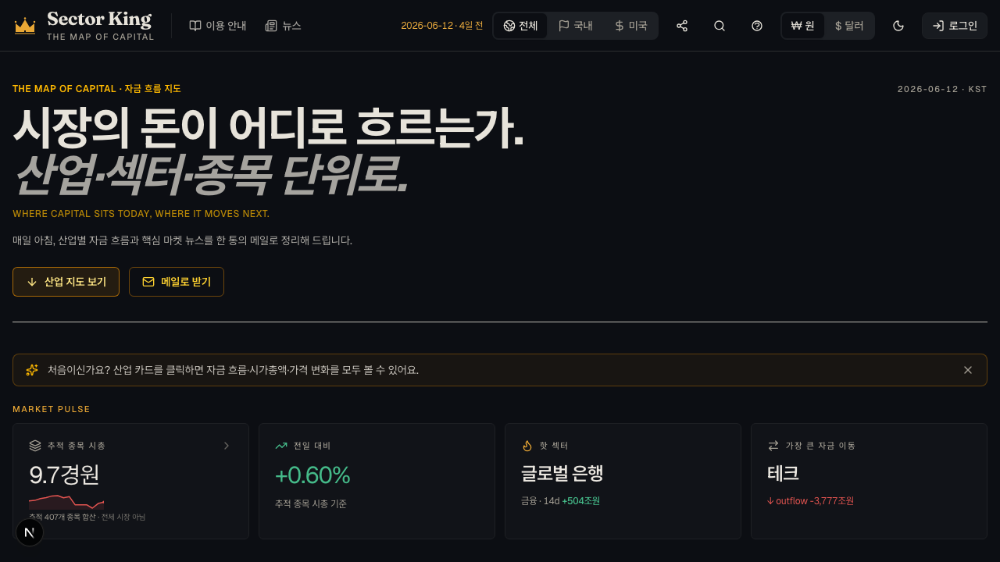
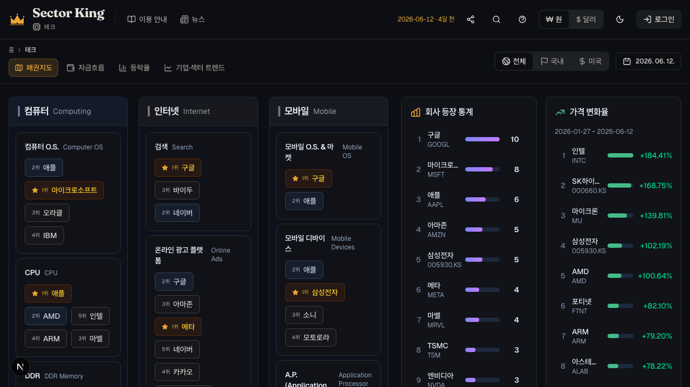
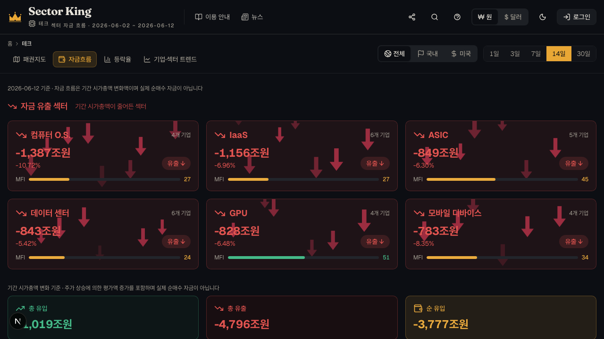
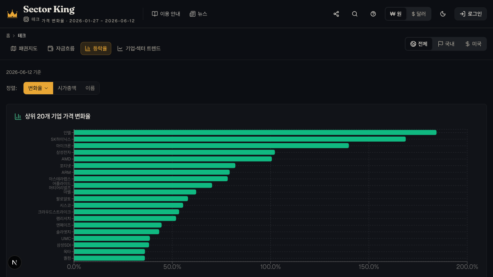
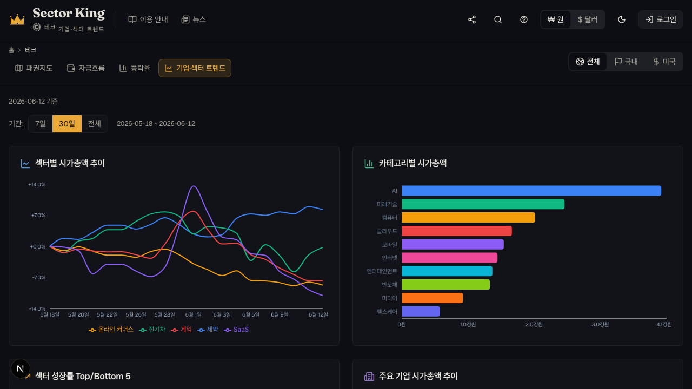
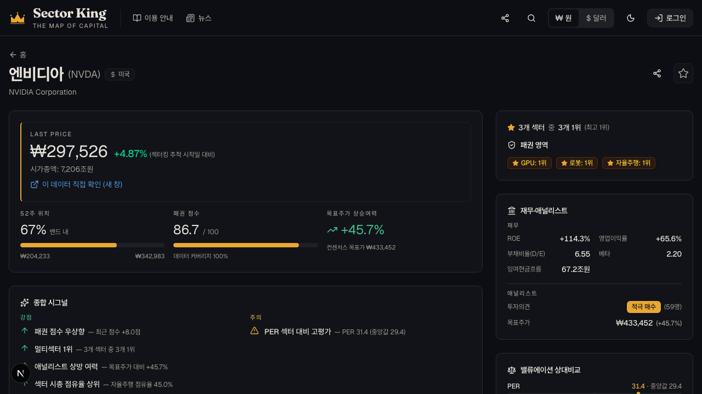
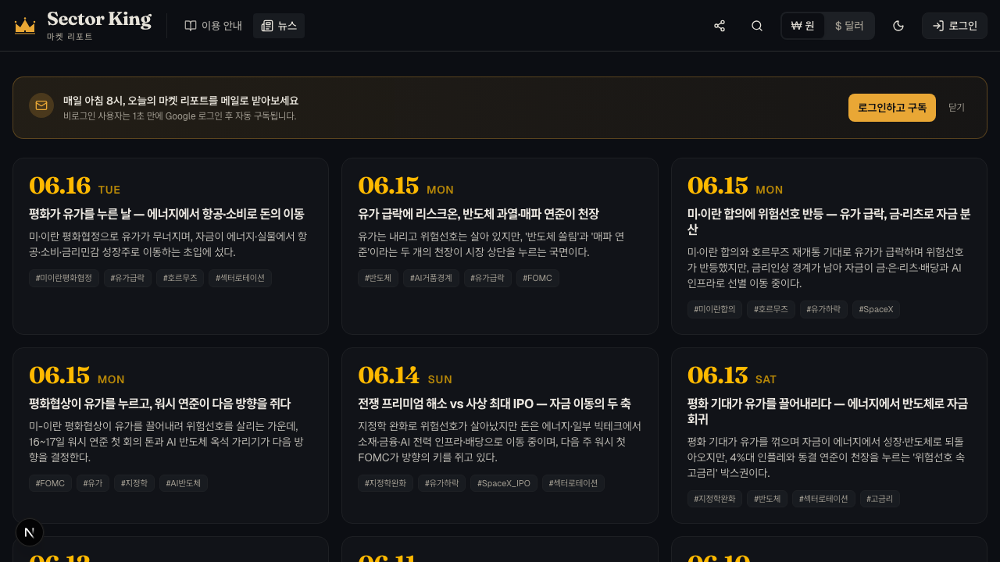
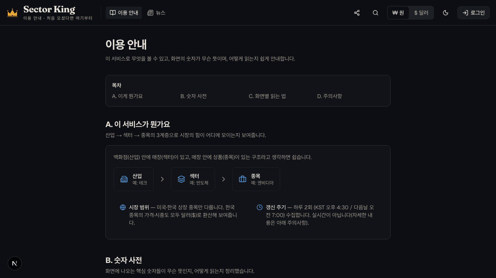

Sector King은 시장의 자본이 어느 산업·섹터·종목으로 모이고 빠지는지 보여주는 "자금 흐름 지도(The Map of Capital)"입니다. 미국·한국 120여 개 기업, 9개 산업을 매일 추적합니다.
개인 투자자가 매일 마주하는 세 가지 벽. Sector King은 이 벽을 데이터 한 장으로 무너뜨립니다.
수백 개 종목·뉴스·지표가 쏟아지지만, 무엇이 중요한지 걸러주는 기준이 없습니다.
종목 하나하나는 봐도 "반도체 vs AI vs 에너지"처럼 산업 단위의 큰 그림은 잡기 어렵습니다.
한국·미국 시장이 원화·달러로 섞여 있어 같은 잣대로 줄 세우기가 사실상 불가능합니다.
→ 하나의 점수, 하나의 통화($), 하나의 지도로 시장 전체를 읽습니다.
백화점(산업) 안에 매장(섹터)이 있고, 매장 안에 상품(종목)이 있습니다. 어느 층에서든 "힘의 순위"를 볼 수 있습니다.
4개 차원을 가중 합산해 "이 기업이 섹터 안에서 얼마나 강한가"를 한 숫자로. 매일 갱신되고 EMA로 부드럽게 다듬습니다.
섹터 내 시가총액 비중 + 거래 활성도. 시장에서 차지하는 무게.
분기 매출·수익 성장률. 지금 빠르게 커지고 있는가.
영업이익률·ROE. 잘 벌어서 잘 남기는가.
애널리스트 의견 + 목표주가 괴리율. 시장의 기대치.

presentation/img/01-home.png
presentation/img/02-map.png
presentation/img/03-flow.png무엇이 가장 크게 움직였는지(등락율)와, 자금이 시간에 따라 어디로 흘렀는지(섹터 트렌드)를 시각적으로 읽습니다.

img/04-changes.png
img/05-trend.png상위 20개 기업 가격 변화율 · 섹터별 시가총액 추이 · 카테고리별 시가총액을 차트로 제공합니다.

presentation/img/06-stock.pngAI 에이전트가 Seeking Alpha와 주요 경제 뉴스를 종합·요약해, 누구나 읽히는 데일리 리포트로 발행합니다.

presentation/img/07-news.png같은 데이터에서 직군마다 다른 가치를 끌어냅니다.
자금이 빠지는 섹터에서 들어오는 섹터로 — 종목이 아니라 흐름 단위로 포지션을 점검합니다.
ROE·영업이익률·성장률 기반 점수와 공개된 방법론으로, 숫자의 출처를 검증하며 활용합니다.
AI 마켓 리포트가 어려운 시장을 쉬운 뉴스로 풀어주고, "숫자 사전"으로 용어까지 — 초보자도 매일 따라갑니다.
경쟁 구도·시장 점유율 변화를 산업 단위로 조망해 전략·리포트의 근거로 씁니다.
"믿어달라"가 아니라 "확인해보라"는 서비스. 데이터 처리 원칙과 방법론을 전부 공개합니다.
Yahoo Finance에서 주가·시총·거래량·재무지표를 자동 수집하고, 매일 두 번 갱신해 최신 상태를 유지합니다.
원·엔 등 네이티브 통화를 달러로 환산해 응답. 이중 환산을 막는 단일 기준(SoT)으로 같은 잣대 비교를 보장.
점수의 일시적 튐을 지수이동평균으로 다듬어 노이즈가 아닌 추세를 보여줍니다.
점수 산식·기업 선정 기준·데이터 한계점을 /methodology에 전부 공개.

presentation/img/08-methodology.png※ 본 서비스의 정보는 투자 권유가 아니며, 투자 결정의 책임은 이용자에게 있습니다.
이미 운영 중인 토대 위에, 인텔리전스를 한 단계씩 확장합니다.
3계층 대시보드, 점수 시계열, 미국·한국 시장, ₩/$ 전역 토글까지 라이브 운영 중.
Seeking Alpha·경제 뉴스 종합 요약을 1일 2회 발행, 메일 구독 지원.
관심 종목·섹터의 점수 급변·자금 유입 전환을 푸시/메일로 알림. 나만의 패권 지도.
"비싼가 / 싼가"를 쉽게 읽는 밸류에이션 지표를 추가합니다 — Forward PER(미래 이익 대비 주가), PEG(성장성까지 감안한 PER), P/FCF(실제 버는 현금 대비 주가). 여러 지표를 묶어 "성장 대비 안 비싼 강자"처럼 한 줄로 해석해 줍니다.
추적 산업·종목 확대, 섹터별 심층 리포트, 글로벌 시장 단계적 추가.
"내 포트폴리오를 패권 관점에서 진단해줘" — 데이터와 뉴스를 잇는 대화형 인텔리전스.
Sector King은 이미 매일 돌아가는 라이브 서비스입니다. 여기에 당신의 기획·영업·홍보·검증이 더해질 때, 가장 신뢰받는 경제 인텔리전스 서비스가 됩니다. 함께 만들어요.
데이터 출처 Yahoo Finance · 1일 2회 갱신 · 미국·한국 120+ 기업 / 9개 산업